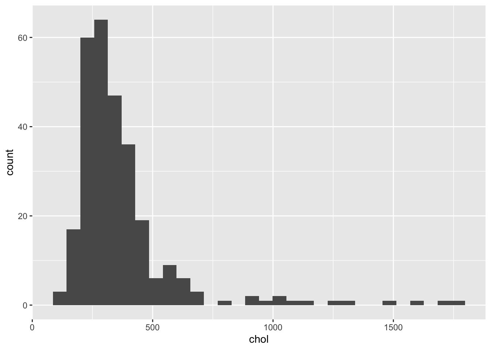
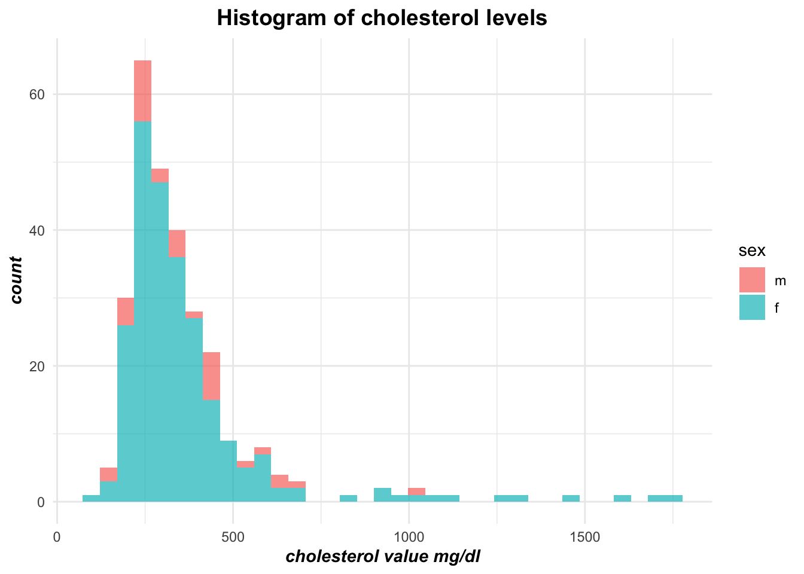
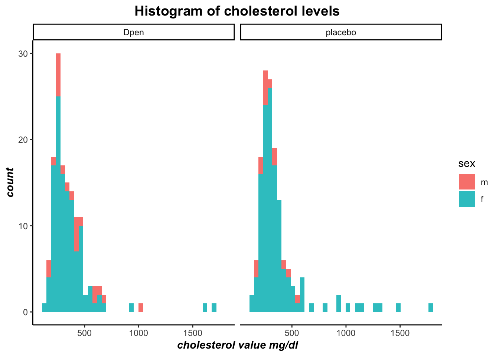
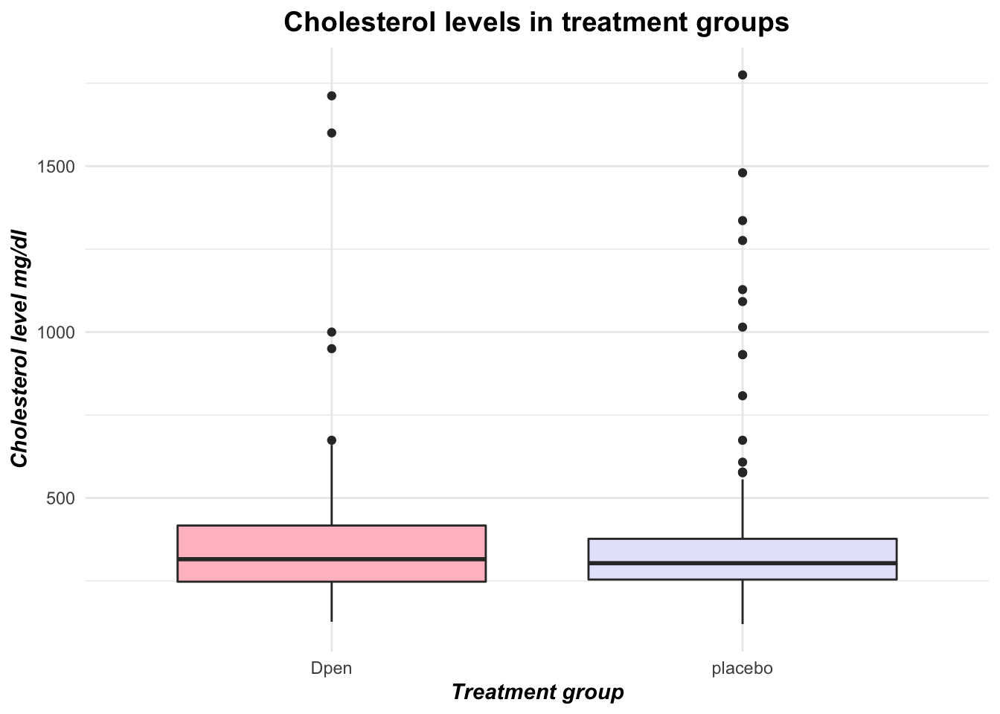
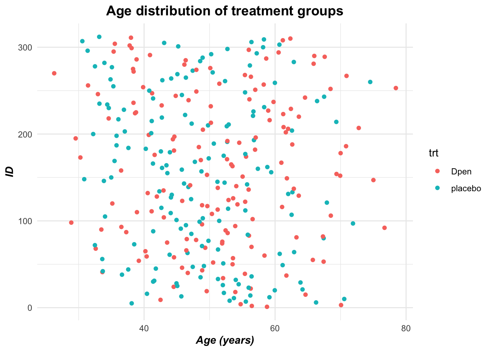

Merin Grace
I'm Merin Grace, a Business Intelligence Analyst at Memorial Sloan Kettering Cancer Center in New York City — one of the world's leading cancer research and treatment institutions. I work at the intersection of data, healthcare, and strategy to help drive meaningful, evidence-based decisions.
I hold a Master's degree in Biostatistics and Data Science from Cornell University, (Weill Cornell Graduate School of Medical Sciences), which I completed in 2020. I graduated with a Bachelor of Engineering in Biomedical Engineering from City College of New York (CCNY) in 2016.
Prior to my current role, I worked as a Data Analyst at Memorial Sloan Kettering, where I built a strong foundation in healthcare data, clinical analytics, operational analytics, and resource strategy. Before joining MSK, I gained experience in the medical device industry at Soterix Medical and Stryker Orthopedics. At Stryker, I served as a Sr. CAPA Analyst focused on process improvement and project management in alignment with regulatory compliance standards including FDA and EU requirements. I later transitioned into a Sr. Engineer role in Risk Monitoring, where I leveraged large datasets for trend analysis and post-market surveillance across key product families.
Download Resume →Projects
An interactive Tableau dashboard exploring food access and food security disparities across the United States, built from USDA census-tract-level data.
View Project →Exploring the powerful ggplot2 library in R to create insightful visualizations using the PBC clinical trial dataset from Mayo Clinic.
View Project →Add your next project here. Update this card with a title, description, and link.
Data Visualization
with ggplot2
Graphical representation of data can provide an effortless way to comprehend complex datasets, identify trends, and aid in data driven decision-making. Data visualization with ggplot2 from Rstudio is one of the most elegant and versatile methods in R. In this blog post, I'll be introducing a few types of graphs that can be plotted using ggplot.
Let's start with installing the required packages. ggplot2 is one of the members of the tidyverse package. we can install this package by running the code below. Note: If you have tidyverse installed already, you only have to load the package. Remove the hashtag before the install.package line below to install the package.
# install.packages("tidyverse") #installing tidyverse
library(tidyverse) #loading the package
library(ggplot2) # loading ggplot
library(survival) #loading package for datasetYou will notice that I've loaded survival package as well. This package is for loading the dataset that I'm going to be using for producing my graphs below. You can use your own data set by reading your raw data from your system. Little insight about the data: The survival package contains a dataset named PBC, which is data collected from the Mayo Clinic trial in primary biliary cirrhosis of the liver conducted betwwen 1974 and 1984. In figure 1 , I'll be generating a histogram of cholestrol levels of the patients in my dataset. In the first line, we use ggplot and enter the name of the dataset that we are interested in plotting. aes() is used for aesthetic mapping. We can specify our x and y axis of our graphs in here. The second line specifies the type of graph we are interested in plotting. geom_histogram() will produce a histogram plot. Let's see the data!
ggplot(data=pbc,aes(x=chol))+
geom_histogram() #creates a histogram
Figure 1
As you can see, the graph is not aesthetically appealing. we cannot interpret the data completely by looking at this plot other than the fact that the data is skewed to the right. Let's modify this plot for better insight of the data.
ggplot(data=pbc,aes(x=chol, fill=sex))+
geom_histogram(position="stack",alpha=0.7,bins=35)+ #creates a histogram
labs(title="Histogram of cholesterol levels",x="cholesterol value mg/dl")+ #create axis labels
theme_minimal()+
theme(plot.title = element_text(face="bold",size="14",hjust=0.5))+ #Bold and center the title
theme(axis.title.x=element_text(face="bold.italic"))+
theme(axis.title.y=element_text(face="bold.italic"))
Figure 2
You'll see that now the histogram shows the cholestrol data based on sex. Sex was another variable in my dataset. I used that for my fill argument. This will create my histogram that is color coordinated based on sex. Position argument is for position adjustment. alpha controls the transparency of the two colored bars. Notice that I've also changed the axis and title appropriately using labs function. You can also change the apprearance such as the position and the font size of your label and axis using theme() and related arguments. In this plot I used theme_minimal() to change the theme of my plot. You can also use other themes such as theme_bw(), or theme_classic() to custmoize based on your preference. You can also use ggtitle() instead of labs() to add a main title to the plot. If you'd like to see the histograms of cholesterol data based on the treatment groups that was in the study, we can use facet_wrap() function to do so. faceting allows the user to split one plot into multiple subplots based on a variable in the dataset. Note: There is also a facet_grid() function that can form a matrix of rows of columns of the panels.
pbc_clean<-pbc%>%
filter(!is.na(trt))%>%
mutate(trt=fct_recode(factor(trt),Dpen="1",placebo="2")) #dataset cleaning to remove na values
ggplot(data=pbc_clean,aes(x=chol, fill=sex))+
geom_histogram(bins=40, position="stack", alpha=0.9)+ #creates a histogram
facet_wrap(~trt)+ # trt variable has treatment groups
labs(title="Histogram of cholesterol levels",x="cholesterol value mg/dl")+ #create axis labels
theme_classic()+
theme(plot.title = element_text(face="bold",size="14",hjust=0.5))+ #Bold and center the title
theme(axis.title.x=element_text(face="bold.italic"))+
theme(axis.title.y=element_text(face="bold.italic"))
Figure 3
Let's visualize the same information using a different type of plot. Figure 4 shows a boxplot of cholesterol data by treatment group.
ggplot(data=pbc_clean)+
geom_boxplot(aes(x= trt, y=chol),fill=c("pink","lavender"))+
labs(title="Cholesterol levels in treatment groups",x="Treatment group",y="Cholesterol level mg/dl")+
theme_minimal()+
theme(plot.title = element_text(face="bold",size="14",hjust=0.5))+ #Bold and center the title
theme(axis.title.x=element_text(face="bold.italic"))+
theme(axis.title.y=element_text(face="bold.italic"))
Figure 4
geom_boxplot() creates a boxplot of the data. Notice how we can also customise the color of our plots by entering a vector of colors of our choice. Customizing our plots using these arguments can give us a better insight about our data. Compare figure 3 & 4 to figure 1. We have more information of the cholesterol data based on gender and treatment group from 3 & 4, compared to figure 1! We can also vividly see the ouliers in our dataset as well. Now let's look at the age distribution of the patients in our dataset.
ggplot(data=pbc_clean,aes(x=age,y=id,col=trt))+
geom_point()+
labs(title="Age distribution of treatment groups",x="Age (years)",y="ID")+
theme_minimal()+
theme(plot.title = element_text(face="bold",size="14",hjust=0.5))+ #Bold and center the title
theme(axis.title.x=element_text(face="bold.italic"))+
theme(axis.title.y=element_text(face="bold.italic"))
Figure 5
Figure 5 shows the scatterplot of the age ditribution of the patients from this dataset. geom_point() creates a scatterplot. We can see that the patients are equally distributed based on age in both the Dpen and placebo groups.
There are several other plots that you can generate using ggplot. If you are interested in knowing more about the different types of graphs than can be plotted using ggplot, click here.
Data Visualization Using Tableau:
US Food Access
This interactive Tableau dashboard examines food access and food security disparities across the United States at the census-tract level. The visualization draws on data from the USDA Economic Research Service's Food Access Research Atlas — a tool designed to help researchers and policymakers understand where Americans face barriers to reaching affordable, healthy food.
About the Dataset
The dataset comes from the USDA ERS Food Access Research Atlas, which maps census tracts across the US based on income level and proximity to supermarkets, supercenters, and large grocery stores. A neighborhood is considered to have low access when a significant number or share of residents live more than ½ mile (urban) or 10 miles (rural) from the nearest food retailer.
Low-income tracts are identified using criteria from the Department of Treasury's New Markets Tax Credit program — areas where the poverty rate exceeds 20%, or where median family income falls below 80% of the state or metropolitan area median. The atlas combines these income and distance measures to identify communities that are both low-income and low-access, often referred to as "food deserts."
The data also incorporates vehicle availability — a crucial factor, since households without a car face a much greater barrier to reaching a grocery store even in urban areas. Additional indicators include race and ethnicity, age group (children, seniors), SNAP participation, and group quarters populations, allowing for a multidimensional picture of food insecurity across the country.
Data sources include the 2010 US Census, the 2014–18 American Community Survey, and a merged 2019 directory of SNAP-authorized stores from the STARS system and Trade Dimensions TDLinx.
View the Dashboard
Explore the full interactive dashboard on Tableau Public:
View on Tableau Public →Skills
Contact
I'd love to connect — whether it's about data science, potential collaborations, or just to say hello.